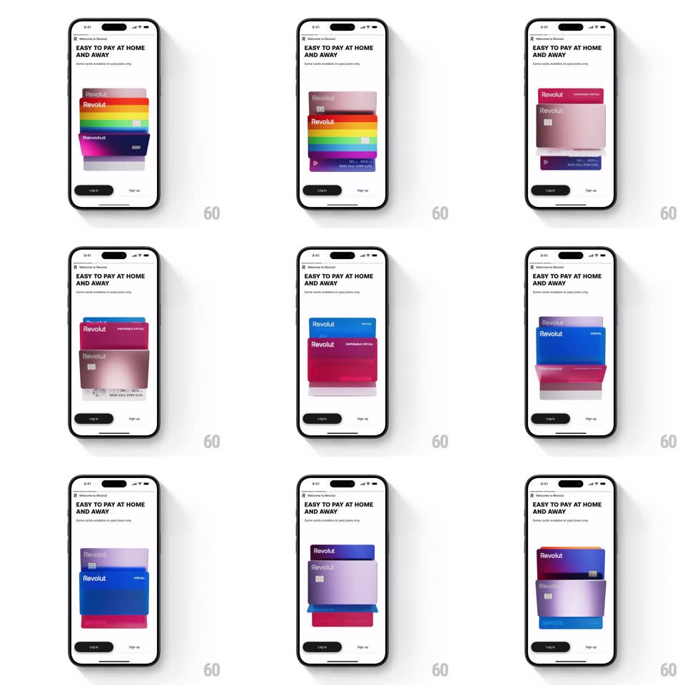

Media
Frame-by-frame

Rebuild this interaction 1:1: Revolut's card-flip onboarding loop - under "EASY TO PAY AT HOME AND AWAY", a stack of Revolut card designs (purple gradient, rainbow, pink, blue, disposable virtual) continuously flips: the front card rotates away in 3D and cycles to the back of the stack.

Rebuild this interaction 1:1: Revolut's card-flip onboarding loop - under "EASY TO PAY AT HOME AND AWAY", a stack of Revolut card designs (purple gradient, rainbow, pink, blue, disposable virtual) continuously flips: the front card rotates away in 3D and cycles to the back of the stack. ## Integration Integration: stack-agnostic spec - springs given as stiffness/damping, timed motions as duration + curve; map every value to your framework and animation library of choice. ## Scene A white onboarding screen: "Welcome to Revolut" eyebrow, bold black headline "EASY TO PAY AT HOME AND AWAY", a small caption, then the card stack hero - overlapping credit cards fanned with slight vertical offsets and shadows - and black "Log in" / white "Sign up" buttons at the bottom. ## Motion spec Pattern: continuous 3D card carousel. - The stack holds 4-5 card designs, each offset ~14px lower and 3% smaller than the one in front, with soft drop shadows. - Every ~1.8s the front card flips: rotateX 0 -> -100deg while translateY lifts it up and out (500ms, ease-in) - it tips backward over its top edge, shrinking slightly. - Mid-flight the card fades (last 40% of the flip) and re-enters at the bottom of the stack (fade in, 300ms) as the card behind it becomes the new front. - The remaining stack advances one notch upward (each card moves to the next offset position, spring ~350/22, 350ms). - The loop runs forever with a steady rhythm - no user input needed. ## Calibration - One flip per beat - the stack never has two cards mid-flip. - Cards are rendered with real detail (chip, Revolut wordmark, DISPOSABLE VIRTUAL label where applicable) - the design swap is the show. ## Reduced motion Cards crossfade through the stack order. ## Don't miss - The flipping card casts a moving shadow on the card beneath as it tips back. - The rainbow card and the disposable-virtual card are the standouts - the order should show contrast between neighbors.